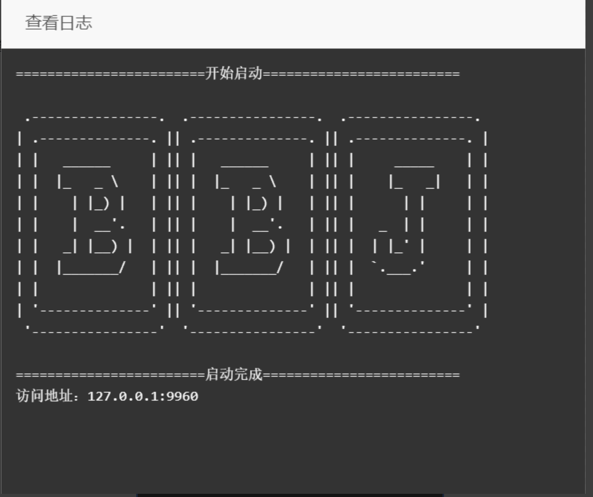

本软件由bbj公益开发，免费使用，无任何加密代码和后门,开源地址，官网:https://www.bbj.icu
q群: 784409031
784409031
----------------------------------------------------
插件包含功能：
1.app弹幕管理，包含vidz，appto，绿豆..
2.app评论管理
3.视频重复名称合并
插件最新版下载地址
软件使用方法：（https://baiduc.github.io/pub/bbj/jar/word.html）
一：文件导入服务器，放任意位置并解压
二：安装环境
三.等待安装完毕

四.查看实时日志（图片打不开，请科学上课）

=================================================宝塔开心版、破解版、国际版...安装教程：==========================================================
一：上传压缩包到任意位置，并解压
二：打开宝塔左侧的终端输入命令：yum install --nogpgcheck -y java-1.8.0-openjdk
三：软件商店安装进程守护
启动命令：nohup java -jar BBJ-plugin.jar &
显示正常运行后打开日志,使用ip加端口访问（需要开启安全端口）
 784409031
784409031